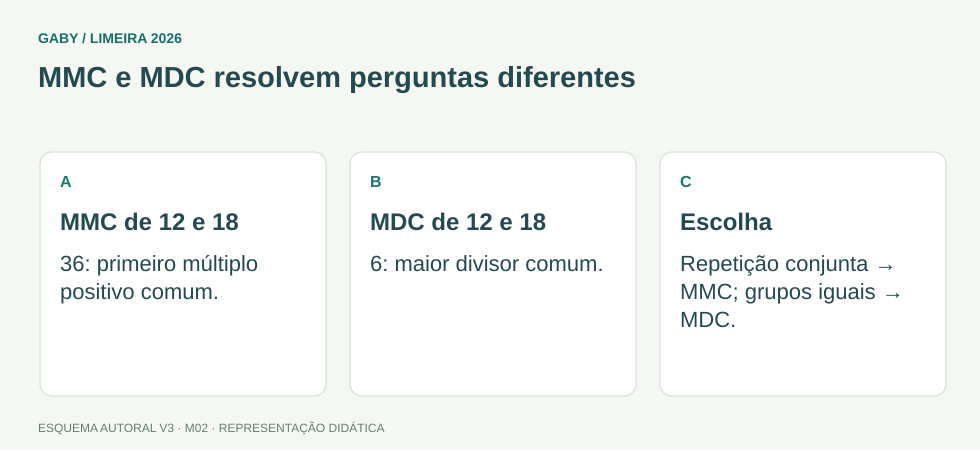

Objetivos do módulo
- Calcular MMC e MDC por fatoração.
- Escolher MMC para eventos cíclicos e denominadores.
- Escolher MDC para repartições máximas sem sobra.
- Aplicar os critérios de divisibilidade e reconhecer números primos testando até a raiz quadrada.
- Contar divisores e reconhecer quadrados perfeitos pela fatoração.
- Calcular o MDC pelo algoritmo de Euclides e usar as propriedades de MDC e MMC (produto, coprimos, multiplicação por um fator).
- Resolver problemas de restos, de reencontro de ciclos e de partes iguais, e simplificar frações pelo MDC.
MMC e MDC resolvem perguntas diferentes

Descrição em texto do esquema
- MMC de 12 e 18: 36: primeiro múltiplo positivo comum.
- MDC de 12 e 18: 6: maior divisor comum.
- Escolha: Repetição conjunta → MMC; grupos iguais → MDC.
Oficina visual · aplique o esquema
Há 24 lápis e 36 canetas. Qual o maior número de kits idênticos, sem sobras, usando todos os itens?
Atividade autoral complementar da V3. Registre sua resposta; a resolução está no arquivo de gabarito e revisão.
1. Múltiplos e divisores
Múltiplos de um número são obtidos por multiplicação; divisores são números que o dividem exatamente. Essa diferença orienta a escolha entre MMC e MDC.
2. Fatoração prima
Escreva cada número como produto de fatores primos. Ex.: 12=2²×3 e 18=2×3². Para MMC, pegue todos os fatores com maior expoente; para MDC, apenas fatores comuns com menor expoente.
3. Quando usar MMC
- Sincronização de ciclos (“a cada 6 e a cada 8 minutos”).
- Somar frações com denominadores diferentes.
- Encontrar menor quantidade compatível com várias periodicidades.
4. Quando usar MDC
- Dividir comprimentos em partes iguais de maior tamanho.
- Montar o maior número de grupos idênticos sem sobra.
- Determinar a maior medida comum.
Aprofundamento 1 — Divisão exata, divisores e critérios de divisibilidade
Em toda divisão de números naturais vale: dividendo = divisor × quociente + resto, com o resto menor que o divisor. Exemplo: 47 ÷ 5 dá quociente 9 e resto 2, porque 47 = 5 × 9 + 2.
Quando o resto é zero, a divisão é exata. Nesse caso, dizer que o divisor divide o dividendo, que o dividendo é múltiplo do divisor ou que ele é divisível pelo divisor é a mesma coisa. Ex.: 42 = 6 × 7 + 0, então 6 é divisor de 42 e 42 é múltiplo de 6.
Listar divisores em pares complementares
Se d é divisor de n, então n ÷ d também é. Os dois formam um par de divisores complementares, cujo produto é n (d × n/d = n). Para listar todos os divisores, teste 1, 2, 3… e anote cada par encontrado. Pare quando o número testado passar da raiz quadrada de n: daí em diante os pares só se repetem.
Exemplo com 48 (√48 fica entre 6 e 7): 1 × 48, 2 × 24, 3 × 16, 4 × 12 e 6 × 8. O 5 não divide 48 e, depois do 6, não é preciso testar mais. Divisores: 1, 2, 3, 4, 6, 8, 12, 16, 24 e 48 (10 divisores).
Uso direto: repartir 48 pessoas em equipes do mesmo tamanho, sem sobra, só funciona com tamanhos que sejam divisores de 48. Equipes de 5 não dão certo, porque 48 = 5 × 9 + 3 deixa resto.
Critérios de divisibilidade
Um critério de divisibilidade diz se um número é divisível por outro sem fazer a divisão.
| Divisível por | Regra | Exemplo |
|---|---|---|
| 2 | O último algarismo é par (0, 2, 4, 6 ou 8). | 3.758 termina em 8: divisível. |
| 3 | A soma dos algarismos é divisível por 3. | 5.364: 5 + 3 + 6 + 4 = 18: divisível. |
| 4 | O número formado pelos dois últimos algarismos é divisível por 4. | 5.364: 64 = 4 × 16: divisível. |
| 5 | Termina em 0 ou 5. | 2.015 termina em 5: divisível. |
| 6 | É divisível por 2 e por 3 ao mesmo tempo. | 5.364 é par e tem soma 18: divisível. |
| 9 | A soma dos algarismos é divisível por 9. | 5.364 (soma 18): divisível. 5.363 (soma 17): não. |
| 10 | Termina em 0 (é divisível por 2 e por 5). | 7.410: divisível. |
| 11 | A diferença entre as somas dos algarismos em posições alternadas é 0 ou múltiplo de 11. | Ver o passo a passo abaixo. |
Critério de divisibilidade por 11, passo a passo
- Numere as posições a partir da direita: unidades na 1ª posição, dezenas na 2ª, centenas na 3ª, e assim por diante.
- Some os algarismos das posições ímpares (1ª, 3ª, 5ª…) e, separadamente, os das posições pares (2ª, 4ª…).
- Subtraia a soma menor da maior. Se a diferença for 0, 11, 22…, o número é divisível por 11.
Exemplo: 4.928. Posições ímpares: 8 + 9 = 17. Posições pares: 2 + 4 = 6. Diferença: 17 − 6 = 11, então 4.928 é divisível por 11 (4.928 = 11 × 448). Contraexemplo: 3.517. Posições ímpares: 7 + 5 = 12; posições pares: 1 + 3 = 4; diferença 8, que não é múltiplo de 11. De fato, 3.517 = 11 × 319 + 8.
Algarismo desconhecido
Qual algarismo x torna 2x5 divisível por 5 e por 9? O 5 final já garante a divisibilidade por 5. Para o 9, a soma 2 + x + 5 = 7 + x precisa ser múltiplo de 9; como x vai de 0 a 9, só x = 2 serve: 225 = 9 × 25. Quando houver duas condições, confira as duas no número final.
Aprofundamento 2 — Números primos e fatoração
Número primo é o natural que tem exatamente dois divisores: 1 e ele mesmo (2, 3, 5, 7, 11, 13…). O 1 não é primo, porque tem um divisor só, e o 2 é o único primo par. Um número maior que 1 que não é primo é chamado composto.
Teste de primalidade até a raiz quadrada
Se n = a × b e os dois fatores fossem maiores que √n, o produto passaria de n. Logo, todo número composto tem um divisor primo menor ou igual à sua raiz quadrada. Para saber se n é primo, basta tentar dividir n pelos primos até √n: se nenhum deles der divisão exata, n é primo.
- 149: como 12² = 144 e 13² = 169, √149 fica entre 12 e 13. Teste 2, 3, 5, 7 e 11: nenhum divide 149. Logo, 149 é primo.
- 187: √187 fica entre 13 e 14. Teste 2, 3, 5, 7, 11 e 13: o 11 divide (187 = 11 × 17). Logo, 187 é composto.
Atalhos: fora o 2 e o 5, nenhum primo termina em 0, 2, 4, 5, 6 ou 8; e a soma dos algarismos elimina depressa os múltiplos de 3.
Decomposição em fatores primos
Divida o número pelo menor primo que o divide e repita com o quociente até chegar a 1. Os primos usados, com suas repetições, formam a fatoração, que é única (só a ordem dos fatores pode mudar).
| Número | Primo que divide | Quociente |
|---|---|---|
| 540 | 2 | 270 |
| 270 | 2 | 135 |
| 135 | 3 | 45 |
| 45 | 3 | 15 |
| 15 | 3 | 5 |
| 5 | 5 | 1 |
Resultado: 540 = 2 × 2 × 3 × 3 × 3 × 5 = 2² × 3³ × 5.
Ler divisores pela fatoração
Todo divisor de 540 usa só primos da fatoração, com expoentes que não passam dos de 540: o 2 com expoente 0, 1 ou 2; o 3 com expoente de 0 a 3; o 5 com expoente 0 ou 1. Isso responde perguntas sem listar todos os divisores:
- Maior divisor ímpar de 540: tire todos os fatores 2 e mantenha o resto no máximo: 3³ × 5 = 135.
- Maior divisor de 540 que não é múltiplo de 5: 2² × 3³ = 108.
- 12 = 2² × 3 divide 540; 8 = 2³ não divide, porque 540 só tem dois fatores 2.
Divisor garantido: se só se sabe que n = 2a × 5b, com a ≥ 2 e b ≥ 1, o maior divisor garantido é 2² × 5 = 20, formado pelos menores expoentes permitidos. Já 40 = 2³ × 5 pode falhar: no caso a = 2 e b = 1, n = 20.
Aprofundamento 3 — Quantidade de divisores e quadrados perfeitos
Se n = pa × qb × rc, com p, q e r primos, cada divisor escolhe um expoente de 0 a a para p, de 0 a b para q e de 0 a c para r. As escolhas são independentes, então a quantidade de divisores positivos é (a + 1) × (b + 1) × (c + 1): some 1 a cada expoente e multiplique.
- 540 = 2² × 3³ × 5: (2 + 1) × (3 + 1) × (1 + 1) = 3 × 4 × 2 = 24 divisores, contando o 1 e o próprio 540.
- Quantos desses divisores são pares? O divisor par precisa do 2 com expoente 1 ou 2 (2 opções): 2 × 4 × 2 = 16.
Números com poucos divisores
- Exatamente 2 divisores: número primo.
- Exatamente 3 divisores: quadrado de um primo, p², com divisores 1, p e p². Exemplos: 4, 9, 25 e 49. O produto dos (expoentes + 1) só dá 3 com um único primo de expoente 2.
Quantidade ímpar de divisores
Os divisores formam pares complementares (d e n/d). Só sobra um divisor sem parceiro diferente quando d × d = n. Por isso, um número tem quantidade ímpar de divisores exatamente quando é quadrado perfeito. Ex.: 36 tem os pares 1 × 36, 2 × 18, 3 × 12 e 4 × 9, mais o 6, que faz par consigo mesmo (6 × 6): são 9 divisores.
Quadrado perfeito pela fatoração
Ao elevar um número ao quadrado, cada expoente da fatoração dobra. Assim, um número é quadrado perfeito quando sua fatoração tem expoentes pares em todos os primos. Ex.: 3.600 = 2⁴ × 3² × 5² = 60².
Com 2.016 = 2⁵ × 3² × 7, há expoente ímpar no 2 e no 7:
- Menor multiplicador que gera um quadrado: complete cada expoente ímpar com mais um fator, isto é, multiplique por 2 × 7 = 14. Fica 2.016 × 14 = 28.224 = 168².
- Menor divisor que deixa um quadrado: retire um fator de cada expoente ímpar. Fica 2.016 ÷ 14 = 144 = 12².
- Divisores que são quadrados perfeitos: use só expoentes pares que caibam na fatoração (o 2 com 0, 2 ou 4; o 3 com 0 ou 2; o 7 com 0). São 3 × 2 = 6 divisores: 1, 4, 16, 9, 36 e 144.
Aprofundamento 4 — Calcular MDC e MMC: fatoração, decomposição simultânea e Euclides
Pela fatoração, com dois ou três números
- MDC: multiplique os fatores primos comuns a todos os números, cada um com o menor expoente.
- MMC: multiplique todos os fatores primos que aparecem em pelo menos um dos números, cada um com o maior expoente.
Exemplo com 90 = 2 × 3² × 5, 150 = 2 × 3 × 5² e 210 = 2 × 3 × 5 × 7:
| Primo | Expoente em 90 | Em 150 | Em 210 | No MDC (menor) | No MMC (maior) |
|---|---|---|---|---|---|
| 2 | 1 | 1 | 1 | 1 | 1 |
| 3 | 2 | 1 | 1 | 1 | 2 |
| 5 | 1 | 2 | 1 | 1 | 2 |
| 7 | 0 | 0 | 1 | 0 (não é comum) | 1 |
MDC(90, 150, 210) = 2 × 3 × 5 = 30. MMC(90, 150, 210) = 2 × 3² × 5² × 7 = 3.150. O 7 fica fora do MDC porque não aparece nos três números.
Decomposição simultânea
Escreva os números lado a lado e divida pelo menor primo que divida pelo menos um deles; quem não for divisível é apenas repetido na linha de baixo. Continue até todos virarem 1.
| Números | Primo | Dividiu todos? |
|---|---|---|
| 16, 24, 36 | 2 | Sim |
| 8, 12, 18 | 2 | Sim |
| 4, 6, 9 | 2 | Não (o 9 é repetido) |
| 2, 3, 9 | 2 | Não |
| 1, 3, 9 | 3 | Não (o 1 é repetido) |
| 1, 1, 3 | 3 | Não |
| 1, 1, 1 | — | Fim |
MMC = produto de todos os primos da coluna: 2⁴ × 3² = 144. MDC = produto só dos primos que dividiram todos os números ao mesmo tempo: 2 × 2 = 4.
Algoritmo de Euclides (divisões sucessivas)
Base do método: se a = b × q + r, todo número que divide a e b também divide r = a − b × q, e todo número que divide b e r também divide a. Então MDC(a, b) = MDC(b, r): troque o par (dividendo, divisor) pelo par (divisor, resto) e repita. Quando a divisão der resto zero, o último resto não nulo (o divisor dessa última divisão) é o MDC.
| Divisão | Quociente | Resto |
|---|---|---|
| 390 ÷ 144 | 2 | 102 |
| 144 ÷ 102 | 1 | 42 |
| 102 ÷ 42 | 2 | 18 |
| 42 ÷ 18 | 2 | 6 |
| 18 ÷ 6 | 3 | 0 |
O último resto não nulo é 6, então MDC(390, 144) = 6. O método é útil quando fatorar dá trabalho.
Para três números, calcule em etapas: MDC(a, b, c) = MDC(MDC(a, b), c). Ex.: MDC(390, 144, 81) = MDC(6, 81) = 3.
Aprofundamento 5 — Propriedades de MDC e MMC
MDC × MMC = produto dos dois números
Para dois inteiros positivos a e b: MDC(a, b) × MMC(a, b) = a × b. Motivo: em cada primo, o MDC fica com o menor expoente e o MMC com o maior; somados, eles dão os dois expoentes originais.
- Conferência: 20 e 36 têm MDC 4 e MMC 180; 4 × 180 = 720 = 20 × 36.
- Achar o MMC sem fatorar: MMC = a × b ÷ MDC.
- Achar o número que falta: se a = 28, MDC = 4 e MMC = 168, então 28 × b = 4 × 168 = 672 e b = 24. Confira: MDC(28, 24) = 4 e MMC(28, 24) = 168.
- A relação vale só para dois números: 2, 4 e 8 têm MDC 2 e MMC 8, mas 2 × 8 = 16, enquanto 2 × 4 × 8 = 64.
Números coprimos (primos entre si)
Dois números são coprimos, ou primos entre si, quando o único divisor positivo comum é 1, isto é, quando o MDC é 1. Eles não precisam ser primos: 8 e 15 são coprimos. Pela relação acima, se o MDC é 1, o MMC é igual ao produto dos dois números: MMC(8, 15) = 120.
- Potências de primos diferentes, como 2⁵ e 7², são coprimas: não têm fator primo comum.
- Dois números consecutivos (n e n + 1) são sempre coprimos.
- Dois ímpares consecutivos (n e n + 2, com n ímpar) também são coprimos.
- Para contar os números de 1 a n coprimos com n, descarte os múltiplos de cada fator primo de n. Para 20 = 2² × 5, retire os pares e os múltiplos de 5; sobram 1, 3, 7, 9, 11, 13, 17 e 19: são 8 números.
Divisor comum divide a soma e a diferença
Se d divide a e b, então d também divide a soma a + b e a diferença a − b (basta colocar d em evidência). Ex.: 6 divide 42 e 18, logo divide 42 + 18 = 60 e 42 − 18 = 24. Daí saem três fatos:
- MDC(a + b, b) = MDC(a, b): somar um número ao outro não muda os divisores comuns. Ex.: MDC(35, 21) = 7 e MDC(35 + 21, 21) = MDC(56, 21) = 7.
- Consecutivos: um divisor comum de n e n + 1 divide a diferença, que é 1; então o MDC é 1.
- Ímpares consecutivos: o divisor comum divide a diferença 2; como 2 não divide número ímpar, o MDC é 1.
Quando um número divide o outro
- Se a divide b, então MDC(a, b) = a e MMC(a, b) = b. Ex.: MDC(12, 60) = 12 e MMC(12, 60) = 60.
- O MDC sempre divide o MMC, ou seja, o MMC é múltiplo do MDC. Se dois números têm MDC 6, o MMC deles não pode ser 63, porque 63 não é múltiplo de 6.
- Sempre vale MDC ≤ menor número ≤ maior número ≤ MMC. Por isso, MDC = MMC só acontece quando os dois números são iguais.
Multiplicar os números por um fator
Multiplicar os dois números pelo mesmo número k multiplica o MDC e o MMC por k. Ex.: MDC(4, 10) = 2 e MMC(4, 10) = 20; com k = 3, MDC(12, 30) = 6 e MMC(12, 30) = 60. O fator multiplica; não se soma k.
Elevar os dois números ao quadrado dobra todos os expoentes, então o MDC e o MMC também ficam ao quadrado: MDC(16, 100) = 2² = 4 e MMC(16, 100) = 20² = 400.
Multiplicar só um deles por um primo novo p, que não divide nenhum dos dois: p entra uma vez no MMC, que fica p vezes maior. Ex.: MMC(4 × 3, 10) = MMC(12, 10) = 60 = 3 × 20. O MDC continua 2.
Divisores comuns e múltiplos comuns
- Os divisores comuns de dois números são exatamente os divisores do MDC. Ex.: MDC(90, 150) = 30, então os divisores comuns de 90 e 150 são os divisores de 30: 1, 2, 3, 5, 6, 10, 15 e 30. Para só contar, use a quantidade de divisores: 30 = 2 × 3 × 5 dá 2 × 2 × 2 = 8.
- Os múltiplos comuns de dois números são exatamente os múltiplos do MMC. Ex.: MMC(9, 12) = 36, e os múltiplos comuns de 9 e 12 são 36, 72, 108…
- Contar em um intervalo: de 1 a 300 há 8 múltiplos de 36, pois 300 = 36 × 8 + 12.
- Primeiro acima de um limite: o primeiro múltiplo comum de 9 e 12 maior que 250 é 36 × 7 = 252 (36 × 6 = 216 ainda é menor).
- Ser divisível por 9 e por 12 equivale a ser divisível por 36, e não obriga a ser divisível por 9 × 12 = 108: o próprio 36 é exemplo.
- Menor k para que 15 × k seja múltiplo de 35: 15 × k precisa ser múltiplo comum de 15 e 35, e o menor é MMC(15, 35) = 105; então k = 105 ÷ 15 = 7. Pela fatoração: 15 = 3 × 5 já tem o 5; falta o 7.
Aprofundamento 6 — Problemas de reencontro, partes iguais e restos
Reencontro de ciclos (MMC)
Eventos que acontecem juntos e se repetem em períodos fixos voltam a coincidir depois do MMC dos períodos. Use a mesma unidade para todos.
- Três linhas de ônibus saem do terminal a cada 12, 18 e 30 minutos e partiram juntas às 7h10. MMC(12, 18, 30) = 180 min = 3 h: saem juntas de novo às 10h10.
- Períodos em horas e minutos: tarefas repetidas a cada 1h30 e a cada 2h equivalem a 90 e 120 minutos; MMC(90, 120) = 360 min, então coincidem a cada 6 horas.
- Períodos em fração de hora: lâmpadas que piscam a cada 1/2 hora e a cada 3/4 de hora piscam a cada 30 e 45 minutos; MMC(30, 45) = 90 min, isto é, coincidem a cada 1h30.
- Somar frações: o menor denominador comum é o MMC dos denominadores. Em 5/12 + 7/18, MMC(12, 18) = 36, então 15/36 + 14/36 = 29/36.
Partes iguais, cortes e distribuição sem sobra (MDC)
Quando é preciso repartir quantidades em partes iguais, sem sobra e do maior tamanho possível, o tamanho da parte é o MDC das quantidades.
- Cortar barras de 84 cm e 120 cm em pedaços iguais, do maior tamanho, sem sobra: MDC(84, 120) = 12 cm; 84 ÷ 12 = 7 e 120 ÷ 12 = 10, total de 17 pedaços.
- Montar o maior número de kits idênticos com 48 cadernos e 72 canetas, usando tudo: MDC(48, 72) = 24 kits, cada um com 2 cadernos e 3 canetas.
Leia o que se pede: o MDC dá o tamanho da parte (ou o número de kits); a quantidade total de pedaços é a soma das divisões.
Fração irredutível pelo MDC
Uma fração é irredutível quando numerador e denominador têm MDC 1. Para chegar a ela em uma só etapa, divida os dois termos pelo MDC: em 168/252, MDC(168, 252) = 84, e a forma irredutível é 2/3. Frações como 84/126 ou 4/6 são equivalentes, mas ainda podem ser simplificadas.
Problemas de restos
“N deixa resto r na divisão por d” significa N = d × q + r, com r menor que d. Os candidatos são r, r + d, r + 2d…
- Listar candidatos: um número entre 40 e 60 deixa resto 2 na divisão por 5 e resto 3 na divisão por 4. Pelo 5, os candidatos são 42, 47, 52 e 57. Desses, só 47 deixa resto 3 na divisão por 4 (47 = 4 × 11 + 3). Resposta: 47.
- Quando falta sempre o mesmo: se N deixa restos 1, 2 e 3 nas divisões por 2, 3 e 4, falta 1 para completar cada divisão. Então N + 1 é múltiplo comum de 2, 3 e 4, isto é, múltiplo de MMC(2, 3, 4) = 12, e N pode ser 11, 23, 35…
- Fase deslocada: o evento A ocorre nos minutos múltiplos de 6 (6, 12, 18, 24…) e o B nos minutos que deixam resto 4 na divisão por 10 (4, 14, 24, 34…). Liste e compare: a primeira coincidência é no minuto 24; depois elas se repetem a cada MMC(6, 10) = 30 minutos (54, 84…). Usar só o MMC, sem olhar a fase, daria a resposta errada.
Maior divisor que deixa restos dados
Se d deixa resto 5 ao dividir 77 e resto 8 ao dividir 128, então d divide exatamente 77 − 5 = 72 e 128 − 8 = 120. Subtraia os restos dos dividendos e calcule o MDC: MDC(72, 120) = 24. Confira que o divisor é maior que os restos (24 > 8) e refaça as divisões: 77 = 24 × 3 + 5 e 128 = 24 × 5 + 8.
Montar os números a partir do MDC e da soma (ou do produto)
Se MDC(a, b) = d, escreva a = d × x e b = d × y, com x e y coprimos (se x e y tivessem fator comum, o MDC seria maior que d).
- Com a soma: a + b = d × (x + y). Para MDC 6 e soma 48: x + y = 48 ÷ 6 = 8. Pares coprimos com soma 8: 1 e 7; 3 e 5 (2 e 6 ou 4 e 4 têm fator comum). Os números são 6 e 42 ou 18 e 30.
- Com o produto: a × b = d × d × x × y. Para MDC 4 e produto 960: x × y = 960 ÷ 16 = 60. Pares coprimos com produto 60: 1 e 60; 3 e 20; 4 e 15; 5 e 12. Os números são 4 e 240, 12 e 80, 16 e 60 ou 20 e 48.
Em teste de alternativas, confira todas as condições em cada par: um par com o MDC certo e a soma errada (ou o contrário) não serve.
Aprofundamento 7 — Mais exemplos resolvidos
Contar divisores e divisores pares
Situação: quantos divisores positivos tem 600? Quantos deles são pares?
Recuperar os números pelo MDC e pelo MMC
Situação: dois números positivos têm MDC 5 e MMC 150. Quais podem ser esses números?
Peças iguais de três rolos
Situação: três rolos de tecido medem 180 m, 252 m e 324 m. Eles serão cortados em peças iguais, do maior comprimento possível, sem sobra. Qual é o comprimento de cada peça e quantas peças haverá?
Múltiplos comuns em um intervalo
Situação: quantos números entre 100 e 500 são divisíveis por 8 e por 14 ao mesmo tempo?
Aprofundamento 8 — Resumo do aprofundamento
- Divisão exata: resto zero. Divisores vêm em pares com produto n; liste até a raiz quadrada.
- Critérios: 2 e 10 olham o último algarismo; 3 e 9, a soma dos algarismos; 4, os dois últimos; 5, termina em 0 ou 5; 6, por 2 e por 3; 11, somas de posições alternadas.
- Primo: teste os primos até a raiz quadrada.
- Quantidade de divisores: some 1 a cada expoente e multiplique. Três divisores: quadrado de primo.
- Quadrado perfeito: expoentes pares em todos os primos; quantidade ímpar de divisores.
- MDC: fatores primos comuns, menores expoentes. MMC: todos os fatores, maiores expoentes.
- Euclides: MDC(a, b) = MDC(b, resto); o último resto não nulo é o MDC.
- MDC × MMC = produto dos dois números (só para dois números).
- Coprimos: MDC 1 e MMC igual ao produto. Consecutivos são coprimos.
- Divisor comum divide a soma e a diferença; MDC sempre divide o MMC.
- Multiplicar os dois números por k multiplica MDC e MMC por k.
- Divisores comuns = divisores do MDC; múltiplos comuns = múltiplos do MMC.
- Restos: liste candidatos e respeite a fase; para o maior divisor, subtraia os restos e use o MDC.
- MDC d com soma S: a = d × x, b = d × y, x + y = S ÷ d, x e y coprimos.
Exemplos resolvidos passo a passo
Exemplo 1
Situação: MMC(12,18).
Exemplo 2
Situação: MDC(24,36).
Exemplo 3
Situação: Alarmes tocam a cada 6 e 8 min. Juntos agora, quando tocarão juntos?
Pegadinhas e erros frequentes
- Confundir “menor tempo comum” com MDC.
- No MMC, usar menor expoente em vez do maior.
- No MDC, incluir fator que não é comum.
- Achar que coprimos precisam ser primos: 8 e 15 são coprimos sem serem primos.
- Usar MDC × MMC = produto com três números: a relação só vale para dois.
- Contar divisores multiplicando os expoentes sem somar 1 a cada um.
- No teste de primo, parar antes da raiz quadrada ou esquecer algum primo menor que ela.
- Confundir o tamanho da parte (MDC) com o número de partes (soma das divisões).
- Em problemas de restos, usar só o MMC e ignorar a fase; no maior divisor com restos, esquecer de subtrair os restos ou aceitar divisor menor que eles.
- Somar o fator ao MDC e ao MMC quando os dois números são multiplicados por ele: o correto é multiplicar.
- Escolher um par que tem o MDC pedido, mas não a soma (ou o produto) pedida.
Resumo de prova
- MMC: todos os primos, maior expoente.
- MDC: primos comuns, menor expoente.
- Ciclos → MMC.
- Maior divisão comum → MDC.
Exercícios do módulo
Resolva sem consultar o arquivo de gabarito. As questões são autorais e construídas para treinar os conceitos do edital.
- 2
- 10
- 12
- 24
- 6
- 12
- 3
- 72
- 25
- 30
- 150
- 5
- média
- porcentagem
- MMC
- MDC
- 2³
- 2²×3
- 2×6 apenas e isso impede fatoração
- 3²×2
- 4
- 24
- 96
- 20
- 90
- 5
- 10
- 15
- 48
- 2
- 14
- 24
- 2
- 0
- 1
- o produto
- 12
- 35
- 1
- 70
Quando terminar, abra Matemática 02 - MMC e MDC - Gabarito e Revisão.
Checklist de domínio
- ☐ Calcular MMC e MDC por fatoração.
- ☐ Escolher MMC para eventos cíclicos e denominadores.
- ☐ Escolher MDC para repartições máximas sem sobra.
- ☐ Aplicar os critérios de divisibilidade por 2, 3, 4, 5, 6, 9, 10 e 11.
- ☐ Decidir se um número é primo testando os primos até a raiz quadrada.
- ☐ Contar divisores pela fatoração e reconhecer quadrados perfeitos pelos expoentes.
- ☐ Calcular o MDC pelo algoritmo de Euclides e o MDC/MMC pela decomposição simultânea.
- ☐ Usar MDC × MMC = produto de dois números para achar o MMC ou o número que falta.
- ☐ Reconhecer coprimos e aplicar as propriedades de MDC e MMC.
- ☐ Resolver problemas de restos e de maior divisor com restos dados.
Meta do módulo: 80% ou mais nas questões, sem depender de consulta.
Referências e conteúdos auxiliares
- IMPA/OBMEP — DivisibilidadeMúltiplos, divisores e propriedades de divisibilidade.
- OBMEP — Introdução à AritméticaAprofundamento em números, operações, divisibilidade e resolução de problemas.
- Portal da Matemática OBMEP/IMPA — MDC e MMC, Parte 1 (material teórico)Definição de MDC, algoritmo de Euclides (MDC(a, b) = MDC(b, r)), MDC pela fatoração com menores expoentes, MDC de vários números em etapas, MDC(k × a, k × b) = k × MDC(a, b), divisores comuns como divisores do MDC, problemas com restos subtraídos e com MDC e soma. Conferido em 18/11/2026.
- Portal da Matemática OBMEP/IMPA — MDC e MMC, Parte 2 (material teórico)MMC por listagem, decomposição simultânea e fatoração com maiores expoentes; MMC = b quando a divide b; MDC × MMC = a × b; coprimos com MMC igual ao produto; problemas de restos com n + 1 múltiplo do MMC. Conferido em 18/11/2026.
- Portal da Matemática OBMEP/IMPA — Critérios de Divisibilidade (material teórico)Critérios por 2, 3, 4, 5, 9, 10 e 11 (somas dos algarismos de ordem ímpar e par) e a propriedade de que a soma de múltiplos de n é múltiplo de n. Conferido em 18/11/2026.
- Portal da Matemática OBMEP/IMPA — Conjunto e Quantidade de Divisores (material teórico)Divisores em pares com produto n, busca até a raiz quadrada, quantidade ímpar de divisores exatamente nos quadrados perfeitos e quantidade de divisores pelo produto dos (expoentes + 1). Conferido em 18/11/2026.
- Portal da Matemática OBMEP/IMPA — Números Primos (material teórico)Teste de primalidade pelos divisores até a raiz quadrada e crivo de Eratóstenes. Conferido em 18/11/2026.
- Portal da Matemática OBMEP/IMPA — Múltiplos e Divisores (material teórico)Divisão exata (resto zero), equivalência entre múltiplo, divisível e divisor, definição de número primo e de números primos entre si. Conferido em 18/11/2026.
- Portal da Matemática OBMEP/IMPA — Propriedades dos restos (material teórico)Escrita dividendo = divisor × quociente + resto e restos de somas e diferenças por um mesmo divisor. Conferido em 18/11/2026.
Referências externas de apoio consultadas para a V3 em 27/09/2026. A origem das questões é o material autoral do projeto; estes links não indicam que uma instituição publicou ou validou os exercícios. As páginas externas precisam de internet. Em informática, confira a versão do programa; em legislação, observe o recorte e as regras de atualização do edital.